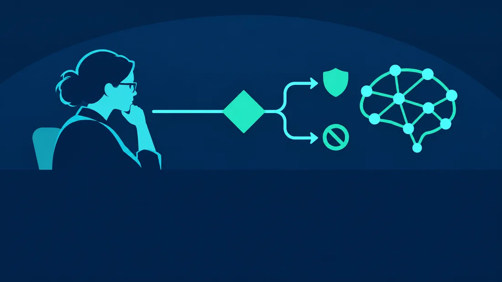
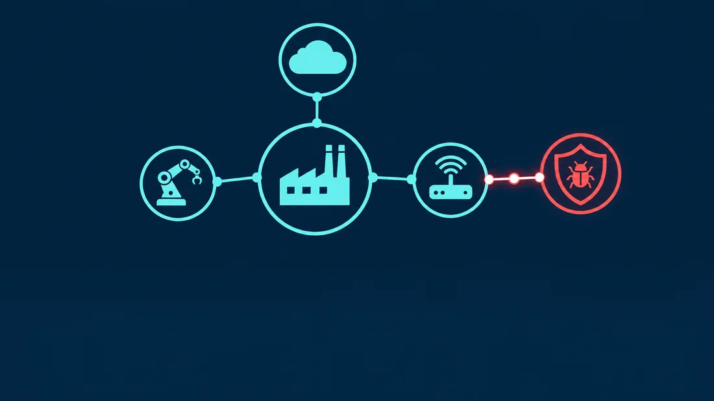
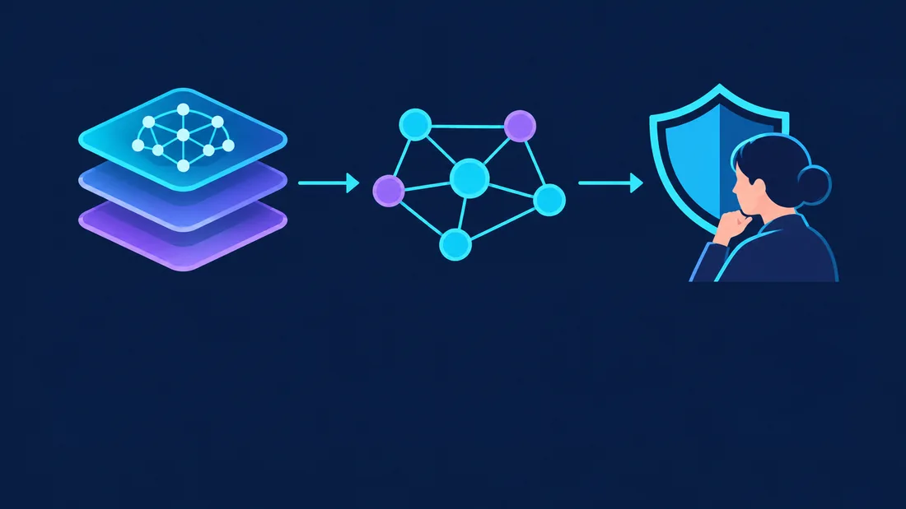

Trustworthy AI
Human oversight, explainable decisions, and governance for AI in consequential settings.
Trusted AI Cybersecurity Digital Twins
Dr Ahmad Mohsin is a Senior Research Fellow and academic. He works with research and industry teams to make AI and cyber-physical systems more secure and dependable across critical infrastructure, manufacturing, and security operations.

Research focus
Human oversight, explainable decisions, and governance for AI in consequential settings.
Threat intelligence and resilient security for operational technology and cyber-physical systems.
Evidence-driven modelling, testing, and monitoring of industrial and infrastructure systems.
Secure AI and cyber resilience across energy, transport, manufacturing, and connected assets.
Selected publications

A framework for trusted AI assistance, analyst oversight, and calibrated autonomy in cyber defense.

Connecting assets, vulnerabilities, and adversarial behavior to support context-aware threat reasoning.

Combining language models and connected evidence to support security analysts.
Work together
Explore joint projects on trustworthy AI, secure digital twins, and critical infrastructure resilience.
See projects and fundingDiscuss R&D, innovation, consultation, or practical evaluations with your team.
See engagement opportunitiesExplore research supervision, academic teaching, training, and workshops.
Explore academic activitiesHave a specific problem or opportunity? Get in touch with Dr Mohsin.